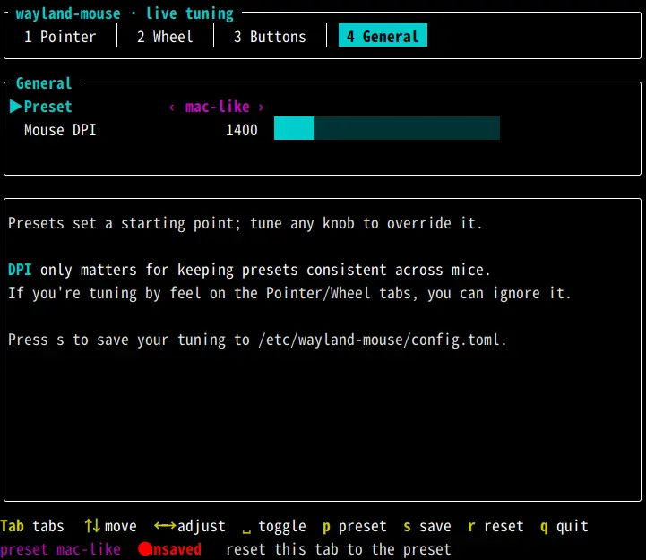
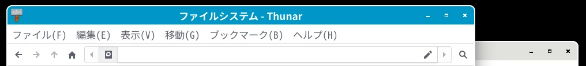

2026-11-23
yay -S --needed lxqt lxqt-wayland-session labwc qt6-toolsmousepad ~/.config/labwc/environment# XKB_DEFAULT_LAYOUT=se を
XKB_DEFAULT_LAYOUT=jp に変更。
設定を反映させる。
labwc -rmousepad ~/.config/labwc/rc.xmlこの部分を、
<pointerSpeed>0</pointerSpeed>
<accelProfile>adaptive</accelProfile>1000 DPI のマウスの場合はこのようにする。
<accelProfile>custom</accelProfile>
<motionCurve step="0.5" points="0.0 0.5757 1.2999 2.2216 3.3847 4.8151 6.51 8.4342 10.5274 12.7193 14.9453 17.1567 19.3233 21.431 23.477 25.4655 27.4037 29.2999 31.1623 32.9977 34.8123 36.6109 38.3971 40.1741 41.9442" />1600 DPI のマウスの場合は、motionCurve step="0.8"
にする。
計算式: 0.5*(1600/1000) = 0.8
移動速度を少し上げたい場合は、motionCurve step=
の値を10%下げる。
設定を反映させる。
labwc -rmotionCurve step は wayland-mouse の値から作成した。
wayland-mouse をインストール。
sudo ./wayland-mouse installwayland-mouse の加速度設定と重ならないように、labwc の加速度設定をフラットにする。
mousepad ~/.config/labwc/rc.xml <libinput>
<device category="default">
<pointerSpeed>0</pointerSpeed>
<accelProfile>flat</accelProfile>wayland-mouse でマウスの DPI を設定。
sudo wayland-mouse tune
Tab を3回押して「General」タブに移動し、「Mouse DPI」を変更。
1000 DPI のマウスなら 1000
にする。即座に設定が反映されるので、マウスを動かしてカーソルの動きを確認。少し速くする場合は
DPI を 900 に変更。
違和感のない速度になったら「s」を押して保存。
wayland-mouse の状態を表示。
sudo wayland-mouse status1000 DPI の場合は次のように表示される。
pointer: enabled=true precision_gain=0.700 max_gain=3.500
midpoint_speed=2857 transition_width=1429 smoothing_ms=6.0これを Google AI で labwc/rc.xml の形式に変換すると、次のようになる。
<accelProfile>custom</accelProfile>
<motionCurve step="0.5" points="0.0 0.5757 1.2999 2.2216 3.3847 4.8151 6.51 8.4342 10.5274 12.7193 14.9453 17.1567 19.3233 21.431 23.477 25.4655 27.4037 29.2999 31.1623 32.9977 34.8123 36.6109 38.3971 40.1741 41.9442" />mousepad ~/.config/labwc/environment# XCURSOR_THEME= を
XCURSOR_THEME=Future-cursors に変更。
# XCURSOR_SIZE= を
XCURSOR_SIZE=24 に変更。
mousepad ~/.config/labwc/rc.xml<name>Sans</name> を
<name>Noto Sans Mono CJK JP</name>
にすべて置換。
ウィンドウを画面最上部にドラッグしても、ウィンドウが拡大されないようにする。
mousepad ~/.config/labwc/rc.xml<range inner="10" outer="10" /> を
<range inner="0" outer="0" /> に変更。
mousepad ~/.config/labwc/rc.xml<context name="TitleBar"> を次のように変更。
<mousebind direction="Up" action="Scroll">
<action name="Focus" />
<action name="Raise" />
</mousebind>
<mousebind direction="Down" action="Scroll">
<action name="Focus" />
<action name="Raise" />
</mousebind><context name="Client"> に次の行を追加。
<mousebind direction="Up" action="Scroll">
<action name="Focus" />
<action name="Raise" />
</mousebind>
<mousebind direction="Down" action="Scroll">
<action name="Focus" />
<action name="Raise" />
</mousebind>gsettings set org.gnome.desktop.interface gtk-enable-primary-paste true「lxqt-config-globalkeyshortcuts」は Wayland
ではサポートされていないので、
~/.config/labwc/rc.xml で設定する。
mousepad ~/.config/labwc/rc.xml「Ctrl+PageUp」「Ctrl+PageDown」で音量を変更する場合は、
<keyboard> に次の行を追加。
<keybind key="C-Next">
<action name="Execute" command="lxqt-qdbus volume down" />
</keybind>
<keybind key="C-Prior">
<action name="Execute" command="lxqt-qdbus volume up" />
</keybind>mousepad ~/.config/labwc/rc.xml<keyboard> のこの部分を削除。
<!-- For qterminal dropdown -->
<keybind key="F12">
<action name="Execute" command="qterminal -d" />
</keybind>mousepad ~/.config/labwc/rc.xml<context name="Root"> のこの部分を削除。
<mousebind button="Left" action="Press">
<action name="ShowMenu" menu="root-menu" />
</mousebind>yay -S --needed labwc-menu-generator-git
labwc-menu-generator --icons > ~/.config/labwc/menu.xml
labwc -r私は自分で作成した青系のテーマを使用しています。

ファイルはこちら。
ダウンロードしたファイルをインストール。
mkdir -p ~/.local/share/themes/Labwc-Blue/labwc
mv themerc ~/.local/share/themes/Labwc-Blue/labwc/rc.xml を編集。
mousepad ~/.config/labwc/rc.xml<theme> を次のように変更。
<theme>
<name>Labwc-Blue</name>GUI で設定する場合は「labwc-tweaks」を使用する。
mkdir -p ~/.local/share/themes/theme_name/labwc
cp /usr/share/doc/labwc/themerc ~/.local/share/themes/theme_name/labwc/ローカルの themerc を編集して適用。
LXQt では「Noto Sans Mono CJK JP」が等幅フォントとして認識されないので、次のように修正。
mkdir -p ~/.config/fontconfig/conf.d
mousepad ~/.config/fontconfig/conf.d/70-noto-mono.conf次の内容を貼り付けて保存。
<?xml version="1.0"?>
<!DOCTYPE fontconfig SYSTEM "fonts.dtd">
<fontconfig>
<match target="scan">
<test name="family">
<string>Noto Sans Mono CJK JP</string>
</test>
<edit name="spacing" mode="assign">
<int>100</int>
</edit>
</match>
</fontconfig>フォント情報のキャッシュを更新。
fc-cache -f -v次のコマンドで「Noto Sans Mono CJK JP」が表示されるのを確認。
fc-list :spacing=100 | grep -i "Noto Sans Mono CJK JP:style=Regular"「世界時計の設定」→「表示形式」タブ→
「形式を詳しく指定する」にチェックを入れる→
「指定」をクリック→
MM月dd日 (ddd) HH:mm
「パネルの設定」→「配置」→
幅: 38 ピクセル
アイコン: 32 ピクセル
場所: 画面上部
「LXQt セッションの設定」→「基本設定」→
「セッション終了時に確認する」のチェックを外す。
「サスペンド/ハイバネートの前に画面をロックする」のチェックを外す。
「音量調節の設定」→
「音量変更のステップ幅」を 2 にする。
「ファンシーメニューの設定」→
「カテゴリの位置」を「左」にする。
yay -S --needed python-psutilget_cpu_usage_and_temp.py
をダウンロード。
「ウィジェットの管理」で「カスタムコマンド」を追加。
「カスタムコマンドの設定」をクリックして次のコマンドを書く。
python ~/get_cpu_usage_and_temp.py例: lightdm から emptty に変更
yay -S --needed emptty
sudo systemctl disable lightdm.service
sudo systemctl enable emptty.serviceemptty の設定を変更。
cp /etc/emptty/conf .
mousepad conf次の箇所を変更。
DEFAULT_USER=ログイン名
AUTOLOGIN_SESSION="LXQt (Wayland)"
LANG=ja_JP.UTF-8ファイルを上書き。
sudo mv conf /etc/emptty/conf